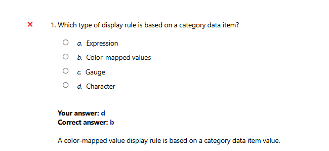
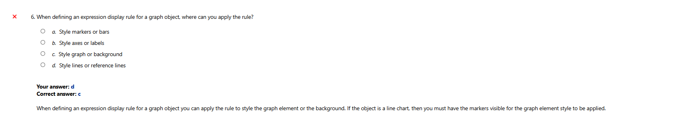
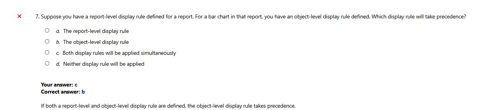
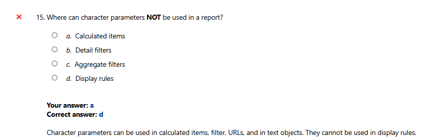
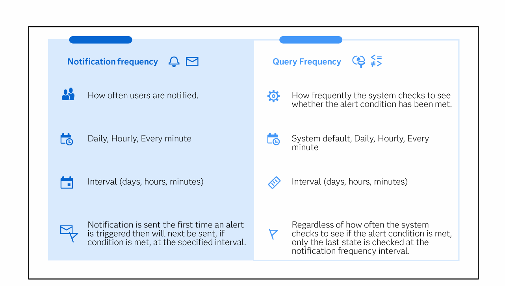
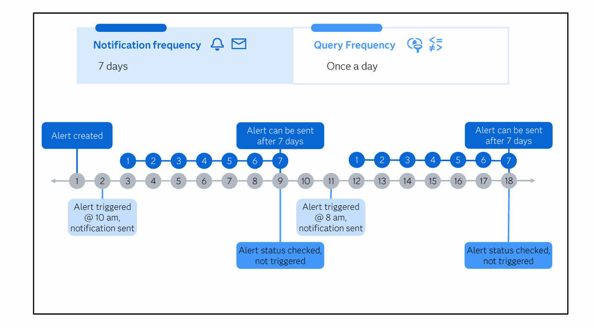

🎯 M2 L5: Display Rules & Parameters — Complete Mistake Guide ▶
📋 The 3 Display Rule Types — Know What Each is Based On
| Rule Type | Based on... | Accepts | 🧠 Memory |
|---|---|---|---|
| Expression | Measure data item Boolean expression | Numeric parameters | "Expr = Evaluate a condition (if X > Y)" |
| Color-mapped values | Category data item value | Category values → colors | "Color = Category (assign colors to products)" |
| Gauge | Measure data item interval definition | Ranges/intervals | "Gauge = Groups by Gaps (interval ranges)" |
⚠️ NOTE: The Gauge type of display rule is NOT the same as a Gauge-Level display rule! The Gauge-level rule applies specifically to the gauge object and has a default 3-interval rule.
❌ Mistake 1: Which rule is based on a CATEGORY data item?

Question: "Which type of display rule is based on a category data item?"
You answered: d) Character ❌
Correct answer: b) Color-mapped values ✅
You answered: d) Character ❌
Correct answer: b) Color-mapped values ✅
Why "Character" is wrong: "Character" is a parameter TYPE, not a display rule type! You confused parameter types with display rule types.
Why "Color-mapped values" is correct: "A color-mapped value display rule is based on a category data item value."
You map specific category values (like "Sports", "Toys") to specific colors.
Why "Color-mapped values" is correct: "A color-mapped value display rule is based on a category data item value."
You map specific category values (like "Sports", "Toys") to specific colors.
🧠 Memory: "Color-mapped = Category values. Character = parameter type, NOT display rule."
❌ Mistake 2: Which rule is based on a MEASURE data item interval?

Question: "Which type of display rule is based on a measure data item interval?"
You answered: b) Color-mapped values ❌
Correct answer: c) Gauge ✅
You answered: b) Color-mapped values ❌
Correct answer: c) Gauge ✅
Why "Color-mapped values" is wrong: Color-mapped is based on CATEGORY values, not measure intervals.
Why "Gauge" is correct: "A gauge display rule is based on a measure data item interval definition."
A gauge splits a measure into intervals/ranges (e.g., 0-100 = red, 100-200 = yellow, 200+ = green).
Why "Gauge" is correct: "A gauge display rule is based on a measure data item interval definition."
A gauge splits a measure into intervals/ranges (e.g., 0-100 = red, 100-200 = yellow, 200+ = green).
🧠 Memory: "Gauge = Groups of intervals (measure ranges). Color-mapped = category values (not intervals)."
❌ Mistake 3: What are the available levels of Display Rules?

Question: "What are the available levels of Display Rules?"
You answered: a) Report, Page, Automatic, and Manual ❌
Correct answer: b) Report, Table, Object, and Gauge ✅
You answered: a) Report, Page, Automatic, and Manual ❌
Correct answer: b) Report, Table, Object, and Gauge ✅
Why you got this wrong: You confused Display Rule levels with Action types! "Automatic" and "Manual" are ACTION types from Topic 9, not display rule levels.
The 4 Display Rule levels:
1. Report-level — Applied across ALL objects on ALL pages. Only Color-mapped values type.
2. Table-level — Applied to list table or crosstab objects. List: 3 types (Color-mapped, Expression, Gauge). Crosstab: Expression only.
3. Object-level (Graph-level) — Applied to individual graph objects. Types: Color-mapped, Expression (style graph element OR background).
4. Gauge-level — Applies to gauge objects only. Type: Gauge only. Default 3-interval rule.
The 4 Display Rule levels:
1. Report-level — Applied across ALL objects on ALL pages. Only Color-mapped values type.
2. Table-level — Applied to list table or crosstab objects. List: 3 types (Color-mapped, Expression, Gauge). Crosstab: Expression only.
3. Object-level (Graph-level) — Applied to individual graph objects. Types: Color-mapped, Expression (style graph element OR background).
4. Gauge-level — Applies to gauge objects only. Type: Gauge only. Default 3-interval rule.
🧠 Memory: "Report, Table, Object, Gauge = RTOG. NOT Page/Auto/Manual — those are ACTION types!"
❌ Mistake 4: Where to apply expression display rule on a graph?

Question: "When defining an expression display rule for a graph object, where can you apply the rule?"
You answered: d) Style lines or reference lines ❌
Correct answer: c) Style graph element or background ✅
You answered: d) Style lines or reference lines ❌
Correct answer: c) Style graph element or background ✅
Why "lines or reference lines" is wrong: You made up specific chart elements. The course says: the expression display rule for graphs lets you choose between styling the graph element (bars, markers) or the background.
Why "graph element or background" is correct: "The expression display rule for graphs allows you to choose to style either the graph element or the background."
⚠️ Important: For line charts, only the markers are colored by the graph element style — the line itself won't change. To see display rules on line charts, use Options → show markers.
Why "graph element or background" is correct: "The expression display rule for graphs allows you to choose to style either the graph element or the background."
⚠️ Important: For line charts, only the markers are colored by the graph element style — the line itself won't change. To see display rules on line charts, use Options → show markers.
🧠 Memory: "Expression on graph = Style the element (bars/markers) or the background. NOT specific parts like lines."
❌ Mistake 5: Which display rule takes precedence?

Question: "Suppose you have a report-level and object-level display rule. Which takes precedence?"
You answered: c) Both applied simultaneously ❌
Correct answer: b) The object-level display rule ✅
You answered: c) Both applied simultaneously ❌
Correct answer: b) The object-level display rule ✅
Why "both applied" is wrong: Display rules follow a CLEAR hierarchy — they don't both apply at once.
Why "Object-level" is correct: "If multiple Display Rules are defined, then Object-Level Display Rules take precedence."
The hierarchy is: Object-level > Report-level
A more specific rule (on a specific object) overrides a general rule (on the whole report).
Why "Object-level" is correct: "If multiple Display Rules are defined, then Object-Level Display Rules take precedence."
The hierarchy is: Object-level > Report-level
A more specific rule (on a specific object) overrides a general rule (on the whole report).
🧠 Memory: "Object beats Report. The closer to the object, the stronger the rule."
❌ Mistake 6: Set prompt values of target report

Question: "When Set prompt values of target report option is set, on which area are values selected?"
You answered: c) Both report and page prompt area ❌
Correct answer: a) Report prompt area only ✅
You answered: c) Both report and page prompt area ❌
Correct answer: a) Report prompt area only ✅
Why "both" is wrong: The option only works at the level it's applied. For a REPORT link, it only affects the REPORT prompt area.
Why "Report prompt area only" is correct: The course materials show:
• "Set prompt bar values of target report → Report prompt area only"
• "Set prompt bar values of target page → Page prompt area only"
These options set prompt values only at the same level at which they are applied.
Why "Report prompt area only" is correct: The course materials show:
• "Set prompt bar values of target report → Report prompt area only"
• "Set prompt bar values of target page → Page prompt area only"
These options set prompt values only at the same level at which they are applied.
🧠 Memory: "Report link → Report prompts only. Page link → Page prompts only. Never both."
❌ Mistake 7: Where character parameters CANNOT be used

Question: "Where can character parameters NOT be used in a report?"
You answered: a) Calculated items ❌
Correct answer: d) Display rules ✅
You answered: a) Calculated items ❌
Correct answer: d) Display rules ✅
Why "Calculated items" is wrong: Parameters CAN be used in calculated items! That's one of their main uses: "Use parameters in calculations, filters, text objects, ranks, display rules, URL links." But display rules specifically don't accept CHARACTER parameters. Only EXPRESSION display rules accept NUMERIC parameters.
Where parameters CAN be used: Calculations, Filters, Text objects, Ranks, Display rules (expression type only, numeric params), URL links.
Character parameters specifically: CAN be used in calculated items, filters, URLs, text objects. CANNOT be used in display rules ❌
Where parameters CAN be used: Calculations, Filters, Text objects, Ranks, Display rules (expression type only, numeric params), URL links.
Character parameters specifically: CAN be used in calculated items, filters, URLs, text objects. CANNOT be used in display rules ❌
🧠 Memory: "Character params = Calculated items, Control objects, Containers — but NOT display rules. Only numeric params work in expression display rules."
🔔 BONUS: Alerts — Notification Frequency vs Query Frequency


| 🔔 Notification Frequency | 🔍 Query Frequency | |
|---|---|---|
| What it is | How often users are notified | How frequently the system checks the alert condition |
| Options | Daily, Hourly, Every minute. Interval (days, hours, minutes) | System default, Daily, Hourly, Every minute. Interval (days, hours, minutes) |
| Key behavior | Notification is sent the first time alert triggers, then next at the specified interval | Regardless of how often the system checks, only the last state is checked at the notification frequency interval |
| 🧠 Analogy | Your phone's notification cooldown 🔕 | A security camera checking every minute 📷 |
How the timeline works (second screenshot):
• Notification frequency = 7 days. Query frequency = Once a day.
• Day 1: Alert created
• Day 2: Alert triggers → Notification sent (first time)
• Days 3-9: System checks daily (query frequency), but cannot send notification because 7 days haven't passed
• Day 9: 7 days passed → Alert CAN be sent, but status = not triggered (so nothing sent)
• Day 11: Alert triggers → Notification sent (7 days have passed since Day 2)
• Days 12-18: Another 7-day cooldown cycle begins 🔄
• Notification frequency = 7 days. Query frequency = Once a day.
• Day 1: Alert created
• Day 2: Alert triggers → Notification sent (first time)
• Days 3-9: System checks daily (query frequency), but cannot send notification because 7 days haven't passed
• Day 9: 7 days passed → Alert CAN be sent, but status = not triggered (so nothing sent)
• Day 11: Alert triggers → Notification sent (7 days have passed since Day 2)
• Days 12-18: Another 7-day cooldown cycle begins 🔄
🧠 Memory: "Query = Quick checks (how often to look). Notif = Not too often (cooldown period). The notification is the FIRST trigger, then a timer starts."
📋 Complete Quick Reference — M2 L5
| Topic | You said | ✅ Correct | Key Rule |
|---|---|---|---|
| Rule based on category | Character ❌ | Color-mapped values | Color-mapped = category values. Character = parameter type, not rule |
| Rule based on measure interval | Color-mapped ❌ | Gauge | Gauge = measure intervals (ranges). Color-mapped = categories |
| Display rule levels | Page/Auto/Manual ❌ | Report, Table, Object, Gauge | Page/Auto/Manual = ACTION types (Topic 9). NOT display rules! |
| Graph expression rule where? | Lines/reference ❌ | Graph element or background | Style the whole element (bars/markers) or the background |
| Report vs Object precedence | Both applied ❌ | Object-level wins | Object-level > Report-level. Specific beats general |
| Set prompt values of target report | Both areas ❌ | Report prompt area only | Report link → report prompts. Page link → page prompts. Never both |
| Character params NOT used where? | Calculated items ❌ | Display rules | Character params CAN be used in calculated items. Display rules only accept numeric params for expression type |
🧠 Final Memory Aid — The 7 Rules for M2 L5:
1. Expr = Evaluate measure (Boolean)
2. Color = Category values
3. Gauge = Gaps/intervals (measure ranges)
4. RTOG levels: Report, Table, Object, Gauge (NOT Page/Auto/Manual!)
5. Object beats Report (precedence)
6. Report link = Report prompts only
7. Char params: OK in calc items, NOT in display rules
1. Expr = Evaluate measure (Boolean)
2. Color = Category values
3. Gauge = Gaps/intervals (measure ranges)
4. RTOG levels: Report, Table, Object, Gauge (NOT Page/Auto/Manual!)
5. Object beats Report (precedence)
6. Report link = Report prompts only
7. Char params: OK in calc items, NOT in display rules